Contribute to this guide using Github
About This Demonstration
Do you already know Intersight and UCS? Or do you want to learn about it? Either way, you are going to learn something new here.
We will first show you how you can see what devices you have in your environment, and how they are connected to each other. While doing this, we will show how you can understand the status of your environment as well, including the health status, compliance, known security vulnerabilities, and more.
Once you understand our lab environment, we will jump into the newest capability of Intersight: historical metrics. We will show you how you can detect problems using these metrics at-a-glance, as well as how you can run your own analysis using the metrics explorer. We will also show you how you can use this to build up your own dashboards for monitoring your environment, and the things that you care about.sdfsdfsdf
Limitations
Permissions to the UCS X-Series hardware in this demonstration are read-only, so you cannot modify or deploy any Intersight configuration (for example UCS domain profiles, policies, pools, and so on) directly on the hardware.
You can create and configure Intersight objects such as UCS domain profiles, policies, and pools. To keep the demo environment clean, these objects are deleted 24 hours after creation.
Requirements
The table below outlines the requirements for this preconfigured demonstration.
Required Optional
Laptop Google Chrome recommended
About This Solution
Organizations today are looking for simplifying and modernizing infrastructure lifecycle management. As the number of assets under management keep growing, complexity increases, and the necessity for a comprehensive and holistic approach to infrastructure lifecycle becomes crucial. The need to deploy applications and infrastructure faster, operate infrastructure in multiple locations across on-premises and edge environments, face increasing difficulty identifying security risks in a more complex, distributed environment are just some of the necessities of today\'s organizations.
What if you could simplify the way you manage your infrastructure to accomplish all this so that you can
-
Deploy and configure infrastructure in minutes, not hours, anywhere?
-
Operate your entire data center and edge environment from one > dashboard?
-
Continuously identify and close security gaps?
-
Monitor and track energy consumption while controlling power > management across your server fleet?
-
Address potential hardware, OS, or software issues before they > impact users? Or reduce the impact if they do occur?
-
Give your staff the ability to accomplish more without creating > additional burdens?
You can accomplish all this and more with Cisco Intersight Infrastructure Service, an infrastructure lifecycle management solution, delivered as-a-service or as a private virtual appliance, that provides a single dashboard to see, control, and automate your compute, storage, and networking infrastructure---wherever it is---from one place.
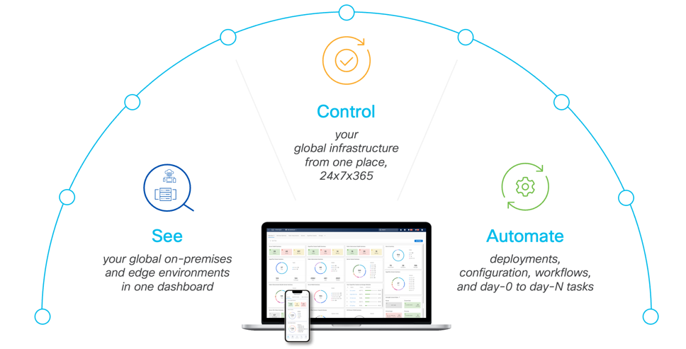
Cisco Intersight provides a robust set of monitoring and metrics capabilities that are designed to give users complete visibility and control over their infrastructure. Here are some of the key features:
-
Unified View: It provides a single pane of glass for monitoring all your infrastructure, including servers, storage, and network devices. It provides health and status information of all devices, as well as performance metrics.
-
Real-time Monitoring: It delivers real-time monitoring of hardware, software, and infrastructure performance. It helps in quickly identifying any irregularities or potential issues before they become significant problems.
-
AI-powered Analytics: The platform uses artificial intelligence and machine learning to analyze data and provide predictive analytics. This helps in identifying potential issues and trends, enabling proactive management and maintenance.
-
Alerts and Notifications: It provides real-time alerts and notifications about any changes in the health or status of your infrastructure. Alerts can be configured based on your requirements and can be sent via email, SMS, or other communication tools.
-
Performance Metrics: It provides detailed performance metrics, including CPU utilization, memory usage, network throughput, and storage I/O. These metrics can be viewed in real-time or historical graphs for trend analysis.
-
Integration: It can integrate with other Cisco products and third-party tools for providing end-to-end visibility and control.
-
Customizable Dashboards: You can customize the dashboards to show the metrics that matter most to you. This helps in quickly identifying any issues and making informed decisions.
-
Telemetry Data: Cisco Intersight collects telemetry data from your systems which can be used for troubleshooting, capacity planning, and performance tuning.
Please note that the availability of these features may depend on the specific Cisco Intersight license you are subscribed to.
Topology
The focus of this lab is Cisco Intersight which is managing a X-Series chassis.
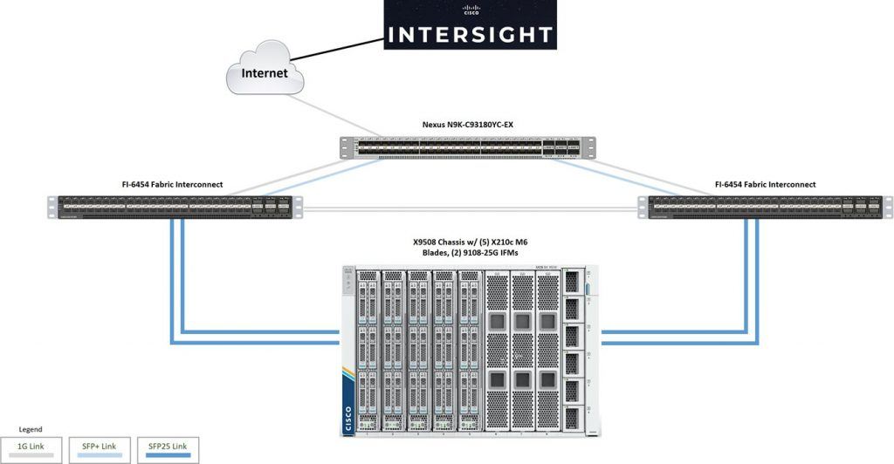
{width="7.399547244094488in" height="3.8444444444444446in"}Get Started
If accessing from dCloud, follow these steps to open an instant demo.
-
Connect to Cisco dCloud to access Cisco Demo Cloud and click on the "Log IN" button on the top right corner. Once you are logged into dCloud navigate to the dCloud Catalog, select Instant Demo from the side bar. This lists all dCloud Instant Demos.
-
Use the search function to locate the demo Cisco Intersight -- Manage Infrastructure from the Cloud v1. Click the title to view the Demo Profile for more information. Click View to go directly into the demo environment.
-
In order for you to authenticate with the environment, dCloud may open multiple browser tabs, ensure these are unblocked and click View again if you experience issues. You will need to ensure you enable Pop Ups from idac.cat-dcloud.com in your browser to enable the dCloud lab to function properly.
[]{#_Toc160022740 .anchor}Explore the Environment
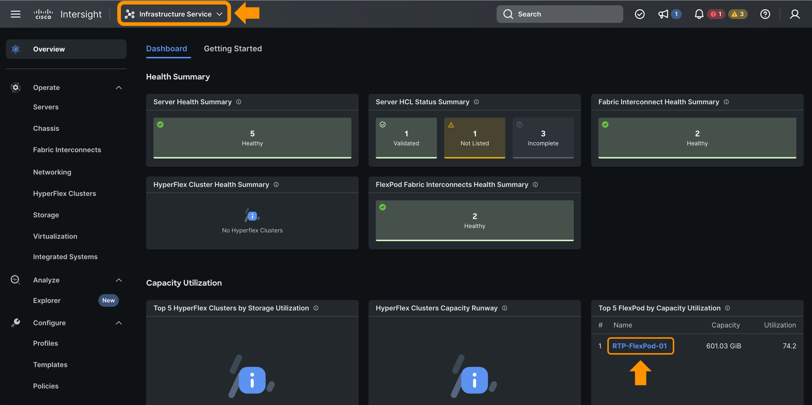
{width="6.5in" height="3.248611111111111in"}Fig 1: Intersight Infrastructure Service
This already gives us a high-level overview of our environment. We see that our account has 5 servers, as well as their health status. We also see that we have two Fabric Interconnects (top of rack switches for Cisco UCS) and their health status. As you scroll down the page you see more information such as storage arrays, device contracts, and more.
- One very interesting thing we see is that we have a FlexPod Integrated System. What\'s an Integrated System? This essentially represents a complete Compute system - servers, networking, and storage. We only have one in that account, so let\'s open it by clicking on its name. This will take you to the Integrated System detail page. We can then see all components of this system reporting data into Intersight, including their alerts.
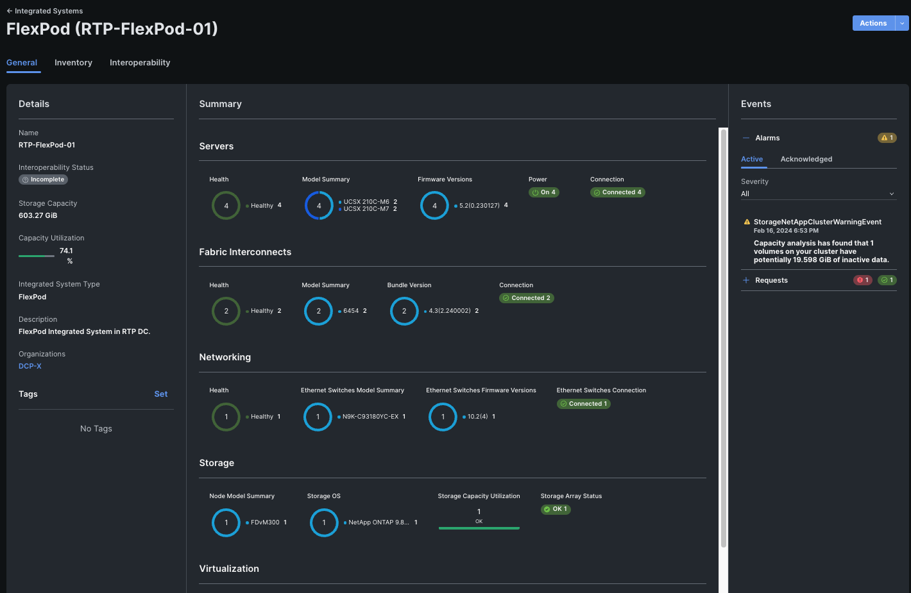
{width="6.060605861767279in" height="3.9439260717410325in"}Fig 2: Integrated Systems
-
To understand how everything is connected:
-
Click on the Fabric Interconnects menu in the left navigation panel. As expected, we have two entries here.
-
Select either of them to view the details.
-
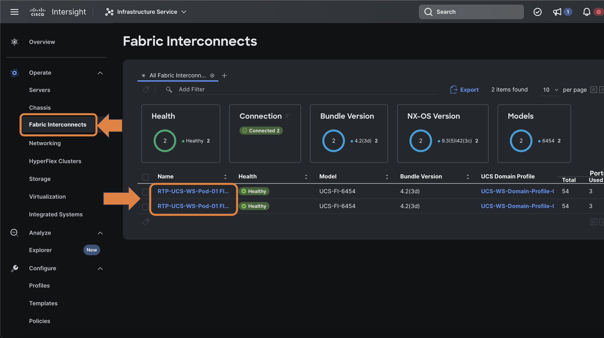
{width="6.064107611548557in" height="3.396807742782152in"}Fig 3: Fabric Interconnect Inventory
-
Click on Topology, you get a visual representation of this domain. You see the two Fabric Interconnects, and their connection to a single chassis. If you had more chassis or rack servers connected, you would see all of them in here.
-
You can learn more about ports by clicking on them, or devices by clicking on the (i) next to them.
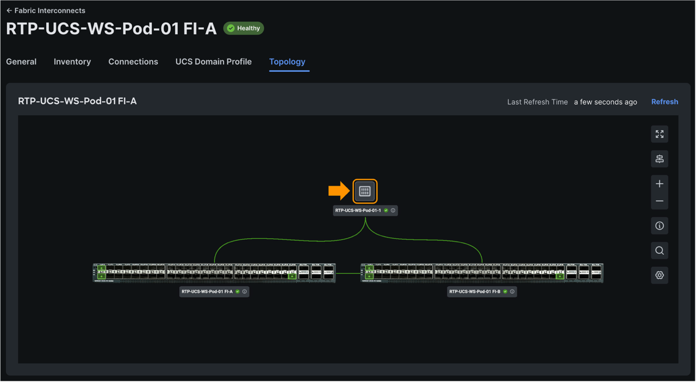
{width="6.040277777777778in" height="3.3202154418197725in"}Fig 4: Fabric Interconnect Topology View
-
To drill down on the chassis, simply double-click the icon, which will move open the chassis detail view. Unlike in the previous view, we can now see detailed network connections all the way from the blade through the IO modules to the Fabric Interconnect. This provides a visualization of the connections.
-
To view more details of one specific device. Click on the first blade server from the left. This will bring up a small window, in which you can click the name of the blade to navigate to that server.
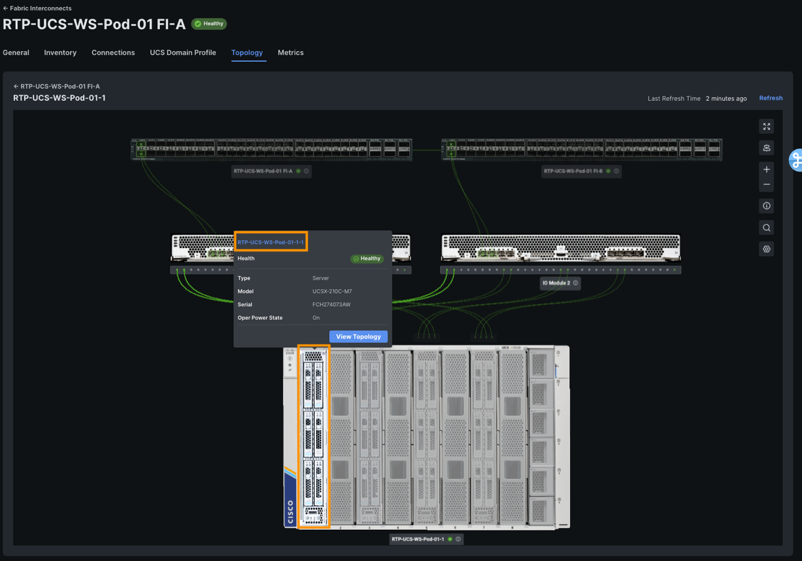
Fig 5: Chassis Topology View
Health, Compliance, and Security
Now that we have explored our lab, let's get into more details around other aspects of the infrastructure we can monitor. Users can quickly see real-time status along with anything that needs immediate attention, including UCS domain connectivity issues, security advisories and field notices. Together with supporting details and recommended remediation, Intersight makes it easy to quickly see what needs attention and take action. In addition, Intersight knows your specific infrastructure devices and will flag any potential compatibility issues specific to your hardware. This takes the guesswork out of maintenance and troubleshooting. We will look at these details in this section of the lab.
Server Inventory
The server list view gives us a good overview about one specific device, listing a lot of the relevant information like health, model, cpi, memory, firmware version, UCS domain, etc.
-
Click on Servers in the left navigation pane to list all the servers.
-
In the overview pane, observe the widgets for Health, Power, HCL Status, Contract Status, etc.
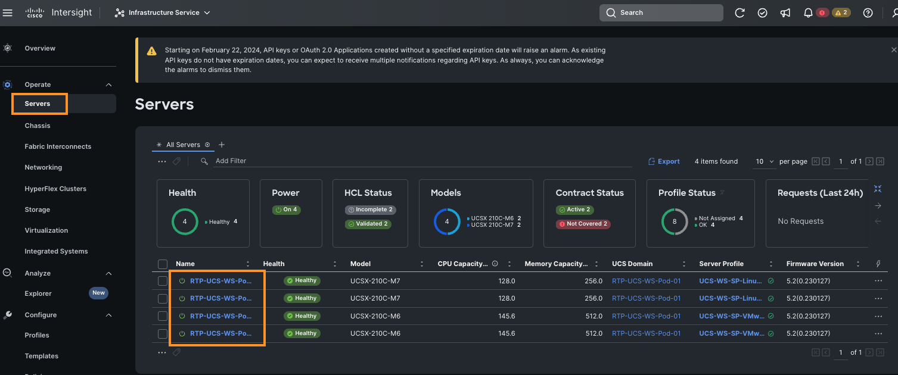
{width="6.060605861767279in" height="2.535612423447069in"}Fig 6: Server Inventory
Service Contract
Intersight also correlates some other information such as the service contract. This speeds up support calls knowing that the hardware is covered under a valid support contract.
You can find that information by adding it to the inventory list or going in the details of the server.
- Click on the setup icon near All Servers on top of the overview pane and click Edit.
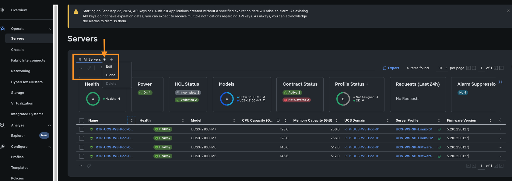
{width="6.070138888888889in" height="2.1433552055993in"}Fig 7: Customizing Inventory view
- Select Contract Status from the list of available column names and click on the Save button.
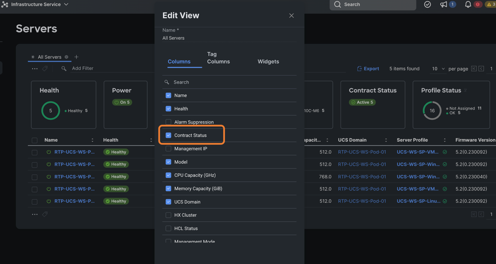
Fig 8: Adding Contract Status
- The Contract Status column shows up in the inventory list. If you put your mouse over the active status, you can get the details on the contract. You can also view the contract status in the server details page.
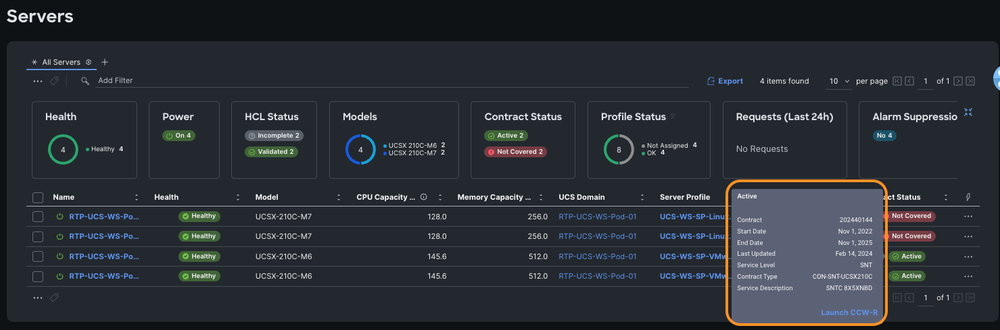
{width="6.5in" height="2.1458333333333335in"}Fig 9: Server Contract Status
Service Details with Health
On the inventory page we have an overall view of all our servers. Let's get more information on a specific server. The server detail view, like any other device detail view, gives us a good overview about one specific device, listing a lot of the most relevant information.
- Click on the server labeled RTP-UCS-WS-Pod-01-1-1 to view the health of the server.
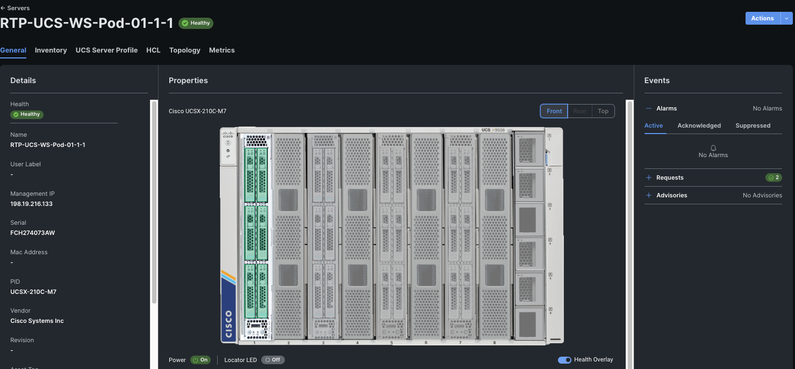
{width="6.080808180227471in" height="2.830564304461942in"}Fig 10: Server Details Page
-
The health status is likely the most important information about a single device. This status is calculated based on the active alarms on a device. If a device is shown as Healthy, there are no known alarms on it. Alarms are raised for hardware problems, as well as select software problems on the server.
-
If there is a hardware problem, you can use the visual view to identify the location. The health overlay shows the status of hardware components. Click on the Top button to view the components inside the server. If any of them had an active alarm, they would be highlighted based on the alarm severity. If, for example, a DIMM was broken, this view would allow you to easily locate it.
Hardware Compatibility List
In the details page of the server, you can now look at the hardware compatibility lists (HCL). Intersight Infrastructure Service alerts you when it detects potential hardware incompatibility issues specific to your environment. This eliminates generic communication and focuses on what's relevant to you. Preventive actions about hardware compatibility, along with contract status, will put you ahead of potential issues---so you're not scrambling to fix things when it's too late.
-
Click on the HCL tab in the server details page. Once you are in the HCL tab, you will see that the validation is a three-step process.
-
The server hardware is analyzed. This should always be valid, unless you modified the hardware in some way with non-verified components.
-
The software compliance validates that Cisco tested the operating system you are using in combination with your hardware.
-
The adapters and their firmware version are validated to make sure that you are running a tested and recommended configuration. If you see a warning in this last step, you can get the recommended drivers by clicking on Get Recommended Drivers on the left-hand side.
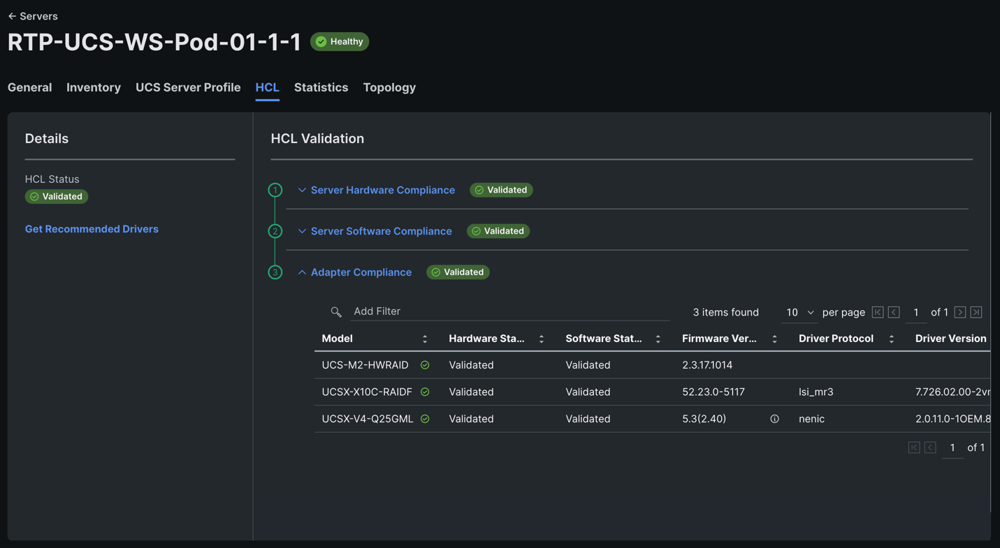
{width="6.070707567804025in" height="3.331106736657918in"}Fig 11: Hardware Compatibility Lists(HCLs)
Alarms
Cisco Intersight uses alarms as part of its system monitoring and management capabilities. Alarms in Intersight are used to notify users of any issues, errors, or abnormalities in their infrastructure that need attention.
When a fault or issue is detected, Intersight generates an alarm which includes detailed information about the issue such as the severity level, the affected component, a description of the problem, and sometimes potential solutions or steps for troubleshooting.
These alarms help in proactively managing and maintaining the health and performance of your systems. Users can set up and customize alarm notifications based on their preferences to stay informed about the status and health of their IT infrastructure.
- To view all the alarms in an account, click on the bell icon in the top right. This opens the alarm pane listing all active alarms in your account. If you do not see any alarms remove all the filters. You can also navigate to the Cleared tab from there to see past alarms.
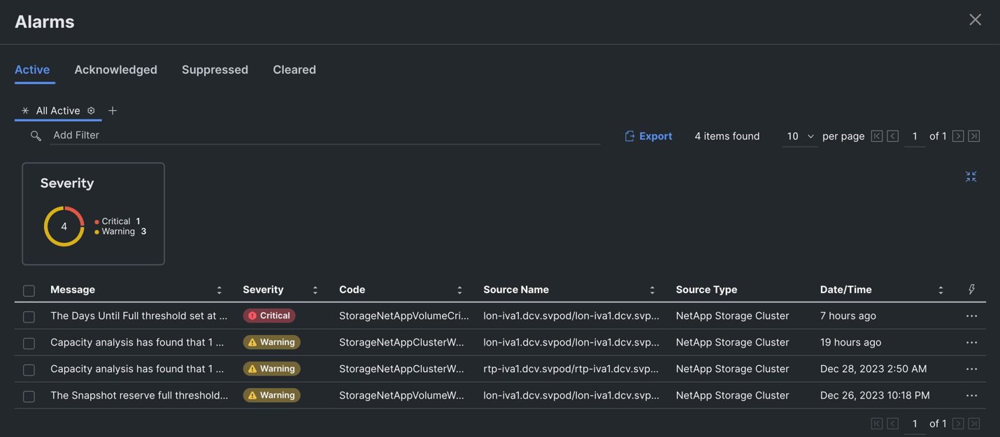
{width="6.070707567804025in" height="2.6585290901137357in"}Fig 12: Alarms
- While the health status is the most important status of a device, there is more information available to help you understand the status of a device. On the right-hand side you can see Requests and Advisories.
Requests
Requests are activities performed on the device from Intersight. This could be as simple as changing the power state, but it could include activities like a full OS deployment.
- Click on check icon on the top right to view all the requests.
{width="6.070707567804025in" height="0.39174212598425195in"}
Fig 13: Requests
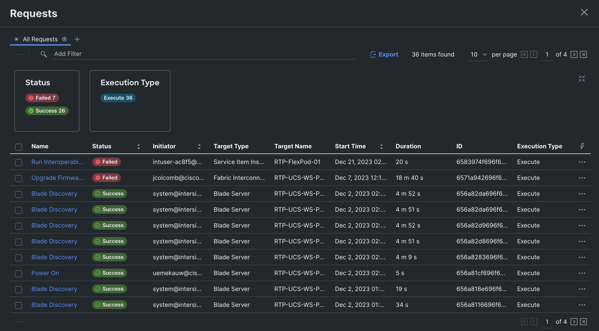
{width="6.070138888888889in" height="3.358031496062992in"}Fig 14: List of Requests
Advisories
Advisories correlate information about the device with Cisco\'s database to give you further information - you will only see these advisories if your device hardware and software matches the information. Thus, preventing any noise and showing you information relevant to your environment. Advisories prevents the administrator from being blindsided by a known security issue. Unlike alarms, there is nothing wrong with the device hardware of software. The information includes things like security advisories, which highlight known vulnerabilities on a device.
- To access Advisories, click on the megaphone button on the top right. This opens a pane showing all Advisories.
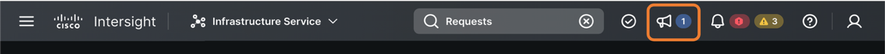
{width="6.141414041994751in" height="0.3818700787401575in"}Fig 14: Advisories
- You can navigate between the tabs to find issues for your environment. Note: the screenshot below is from a different account that has a lot more active advisories to give you a better idea of what might be included. The account for the lab only has one active advisory in Field Notices
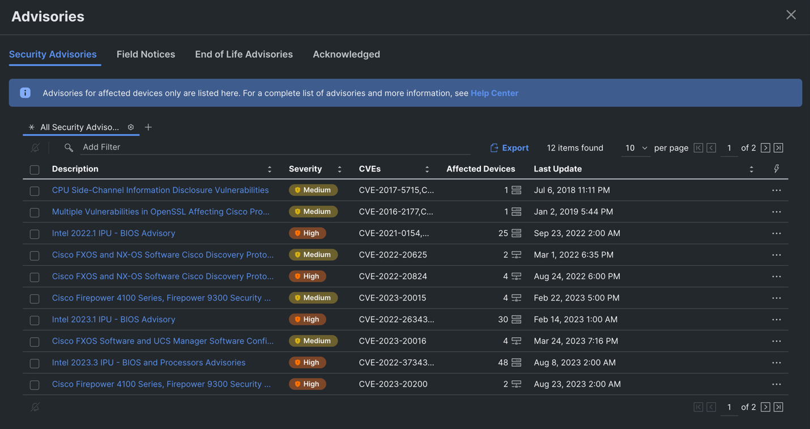
{width="6.060605861767279in" height="3.2135454943132107in"}Fig 15: List of Advisories
Note: A list of advisories can be found here: https://intersight.com/help/saas/resources/cisco_security_advisories#security_advisories
Dashboards for Custom Views
Your infrastructure is always on, so your team needs visibility into the real-time status of your infrastructure whenever you need it. In the last section we saw that Intersight provides you a way to observe the health status, contract status, advisories, alarms, and hardware compatibility lists. Your infrastructure is always on, so your team needs visibility into the real-time status of your infrastructure whenever you need it.
Let's have a look at a lot of individual monitoring options in Intersight - what if we want to get a quick overview of our entire environment? Dashboards are a great way to facilitate that.
- Click on the service selector in the top left, and then select My Dashboard
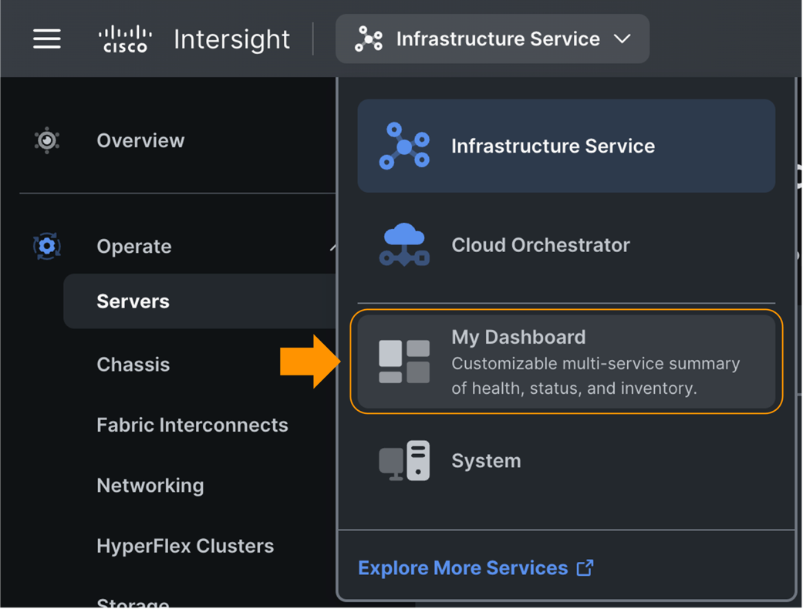
{width="4.727938538932634in" height="3.585858486439195in"}Fig 16: My Dashboard
Built-in Dashboards
Once you open the dashboards service, you will see that there are already a few built-in dashboards that cover different aspects of Intersight. These dashboards will help you get a quick overview of what is going on in your account - you can customize them like any other dashboard though.
All the information presented in the dashboards is based on time-series information (datapoints) captured from devices on a regular basis (up to once per minute), which is then stored for up to two years.
Power & Energy Metrics Dashboard
- Look at the Power & Energy Metrics dashboard first, it provides a quick overview of the energy consumed in our server environment. We also see some widgets that handle top consumers, which allows us to track down servers that pull a particularly high amount of energy.
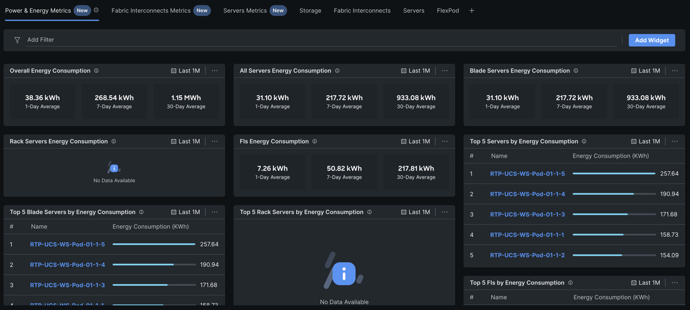
{width="6.070707567804025in" height="2.741547462817148in"}Fig 17: Power and Energy Dashboard
Fabric Interconnect Metrics Dashboard
- Let\'s have a look at another dashboard that has time series information, Fabric Interconnect Metrics. This dashboard allows us to monitor all of our network interfaces on Fabric Interconnects.
There are many different widgets here looking at the top 5 ports by utilization, split up by direction (RX/TX), port type (Uplink Ports, Server Ports, Port Channels), as well as statistic (average vs peak). There are also a few more widgets that show port errors over time. If you just want to quickly figure out if there are any Fabric Interconnect ports that have problems, this dashboard is a great place to get started.
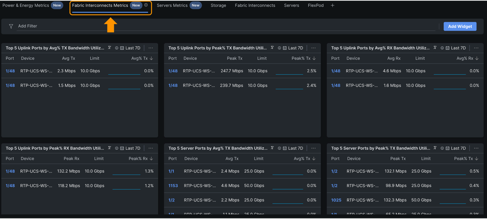
{width="6.050505249343832in" height="2.728545494313211in"}Fig 18: Fabric Interconnect Metrics
Server Dashboard
- Finally, let\'s have a look at the Servers dashboard. Unlike the previous two dashboards, this dashboard only presents information about the current state of your servers. There is no time series information of any kind. This dashboard is useful if you want to see what the health of your servers is at-a-glance.
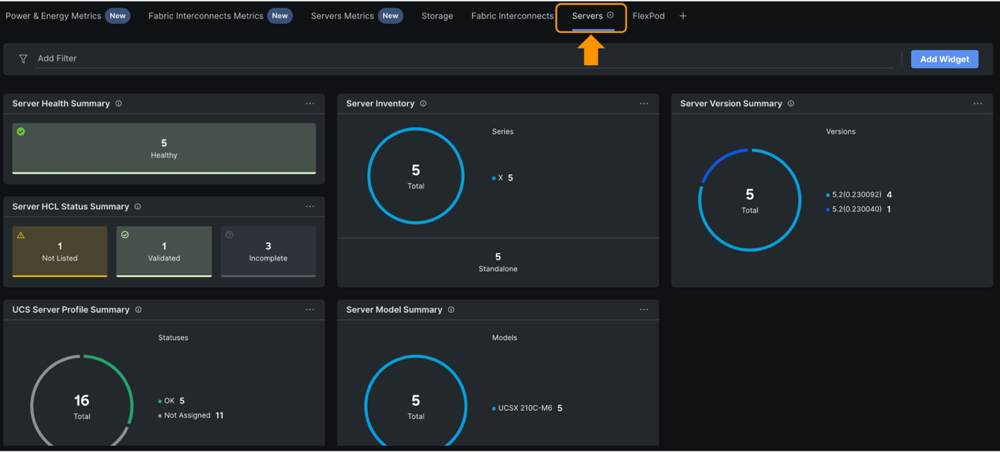
{width="6.05in" height="2.736720253718285in"}Fig 19: Server Dashboard
- You can also look at the Server Metrics dashboard to get temperature information on your servers.
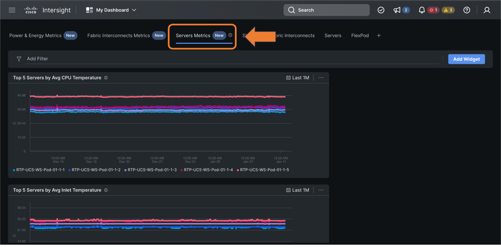
{width="6.070707567804025in" height="3.000330271216098in"}Fig 20: Server Metrics Dashboard
One advantage of the dashboards that do not use time series information is that you can add additional filters by clicking on Add Filter, and then selecting what you want to filter on.
You could, for example, define filters per physical site, application, and much more. In our case we are simply going to set a filter for the Organizations, which we will set to DCP-X-Sandbox.
Once you perform that filter, you will see that this organization does not have any physical equipment, only a bunch of profiles that could be assigned to servers in the future.
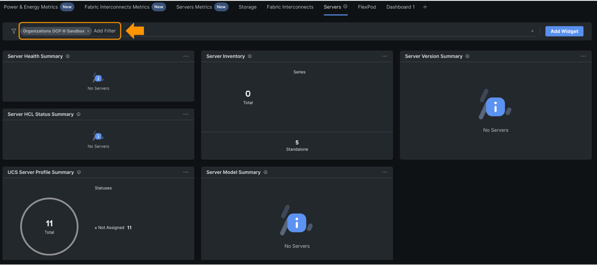
{width="6.070138888888889in" height="2.7082163167104114in"}Fig 21: Using a filter in Server Dashboard
Creating a new Dashboard
We have seen what built-in dashboards can do, time to build our own! --
-
Click on the + icon next to the dashboard list, which will create a new dashboard.
-
You will immediately be prompted to add a widget. Let\'s add a very simple one first: an Alarm Summary. Hover of the widget, and then click Select.
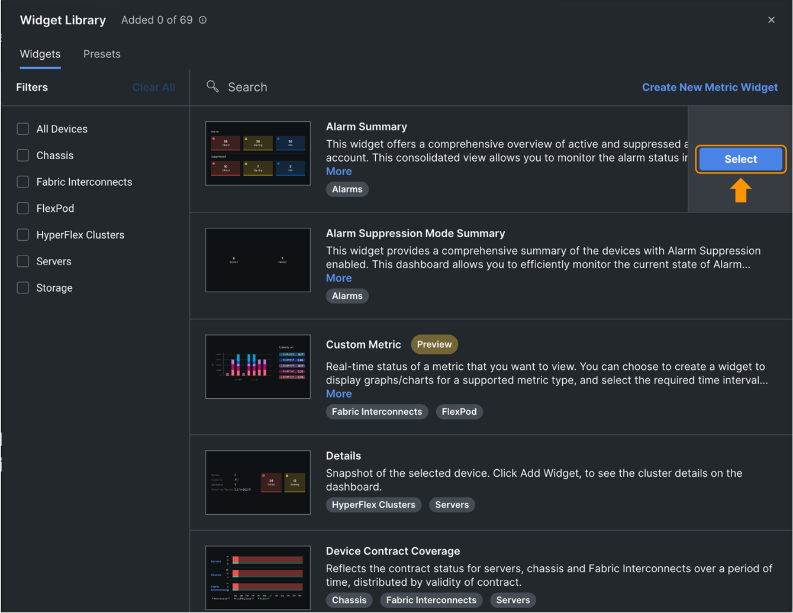
{width="6.090908792650919in" height="4.69117125984252in"}Fig 22: Adding a widget
- This will bring up a preview of the widget, and it will also allow you to configure the widget. In this case, the only configuration option we get is the title. Feel free to change it, and then click on Add Widget to add it to your new dashboard.
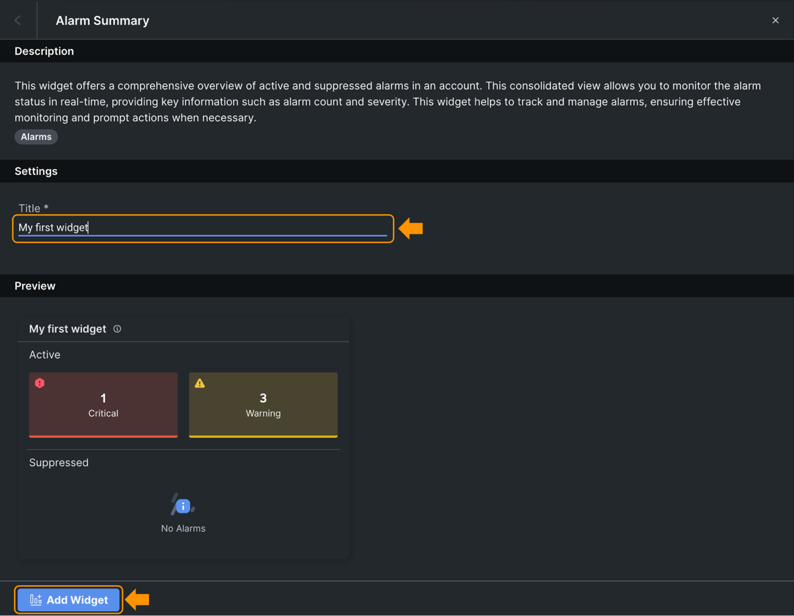
{width="6.070707567804025in" height="4.711283902012249in"}Fig 23: My first dashboard widget
-
Let\'s add a second, more complex widget. That way we can have a look at some configuration options. Use the search to look for Top 5, and then select the Top 5 by Bandwidth Utilization widget. This will bring up a menu to configure this widget. You will have to select a source for the data - what port type do you want to list in this widget? Let\'s go for Uplink Ports.
-
Change the Interval to Last 90 days and keep the traffic type at its default value. For the Aggregation we are going to switch to Peak.
-
Finally, enable the toggle for Thresholds Per Endpoint. This allows us to set a threshold for different utilization levels. The ports in this environment are not highly utilized, thus you will have to set very low thresholds if you want to see anything except green.
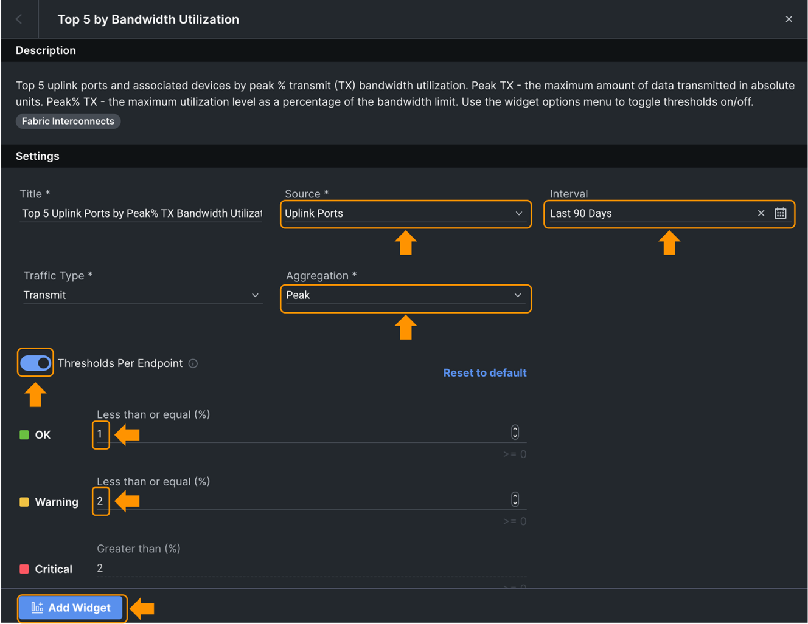
{width="6.020202318460193in" height="4.655366360454943in"}Fig 24: Bandwidth Utilization Widget
-
Once you have finished configuring your widget, go ahead and add it to your dashboard. You should now see two widgets on your dashboard when you close the widget library. You could add many more widgets, but let\'s add a bit more on the dashboard itself. You can click on the gear icon next to the dashboard tab to configure the dashboard.
-
Select Rename so that we can give our dashboard a more meaningful name.
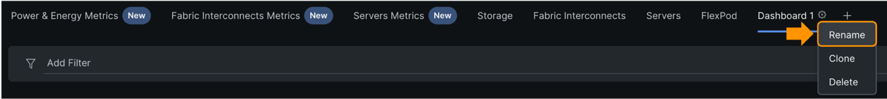
{width="6.020138888888889in" height="0.6772659667541557in"}Fig 25: Rename your widget
That\'s it, all done with our brand-new dashboard. In this case all the monitoring information we saw so far looked great. Let\'s assume we had some current or historic problems, and we needed to deep-dive on what is going on with a specific device. For that, we are going to explore the new time series information in Intersight in greater detail.
Looking back in time
We have seen some of the time series information on the dashboard already, but this only gave us a high-level overview. Let\'s deep dive on this new feature in Intersight to understand how we can use it to monitor our environment. We are first going to pick out a device to look at the metrics in there, then we will go to the metrics explorer where we can create any custom analysis.
Metric Explorer
- While the previous features have all been very easy to use, the explorer is a bit more complex, but offers a lot more freedom in what you can do. You can graph multiple metrics, change filters, and display settings, and much more. It is the best place for your deep dive analysis. Let\'s have a look at all the components of the metrics explorer.
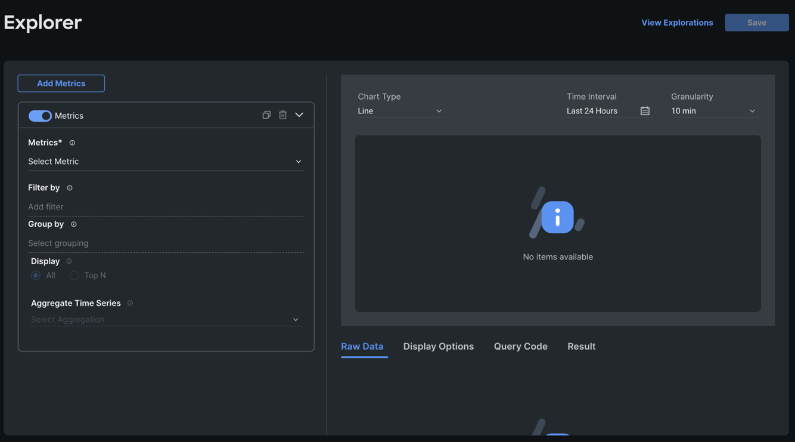
{width="6.060605861767279in" height="3.3659667541557305in"}Fig 26: Metrics Explorer
On the left side we have the metrics query. This allows you to select one or multiple data sources to query. On the right side you then have the chart, as well as the information about the query response data. Finally, if you want to save your exploration, you can use the \"Save\" button on the top right. Let\'s have a look at the query builder first. This is completely UI-driven and contains the following steps:
a. Metrics Selection
b. Filtering
c. Grouping
d. Top N
e. Aggregation
We will go over each of them individually starting with the metrics selection. This allows you to graphically select the metric from all possible options.
-
You start by picking an Instrument, which you can think of as the source that reports the data to Intersight. For example, the Network Interface instrument would contain data reported by interfaces, or Temperature would contain data reported by temperature sensors.
-
When you then pick an instrument, you are presented with a list of available metrics that are reported by these data sources. You can always hover over the info icon next to the metrics to get more information. Keep in mind that all metrics belonging to an instrument will share certain attributes. You can find more information about that here.
-
In the final step, you will have to select a statistic, which determines how data is aggregated. Statistics can best be explained with an example: assume that you have 60 temperature measurements per hour stored in Intersight. If you create a chart that only shows one entry for every 10 minutes, you will have to somehow create a single datapoint out of the 10 datapoints that are available in Intersight. This is what statistics allow you to do. Depending on what you want to find out, different statistics are better.
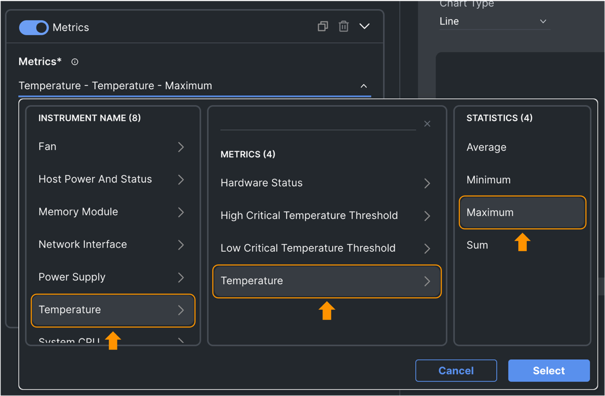
{width="6.070707567804025in" height="3.978648293963255in"}Fig 27: Metrics Selection
- Once you have selected a metric, you can then add filters and groupings to refine your query. Filters allow you to remove certain parts of the data from the result. For example, you could filter out certain device types - maybe you only want to get temperature readings for blades.
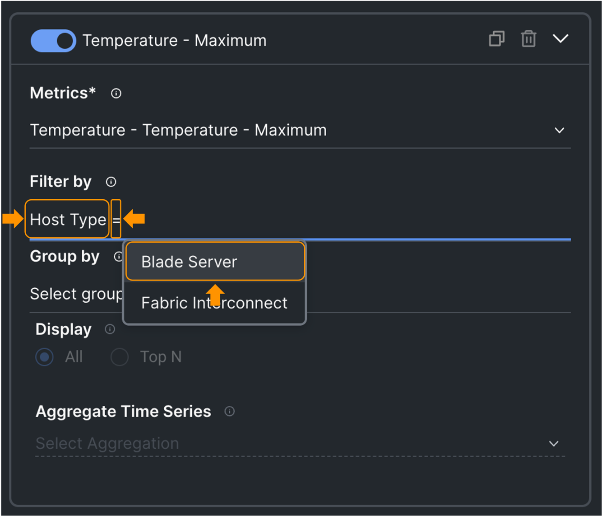
{width="6.060605861767279in" height="5.184149168853893in"}Fig 28: Metrics Filter
- Group by statements allow you to split up the data based on the groups you select. By default, the explorer will retrieve only a single datapoint per time unit. If you have 100 servers, you would still only be shown a single datapoint. To create multiple datapoints, you can then have to add these groups. One example could be grouping based on the hostname of the device, which would then create one line for each physical device. If you add more than one group, each unique combination will result in one line.
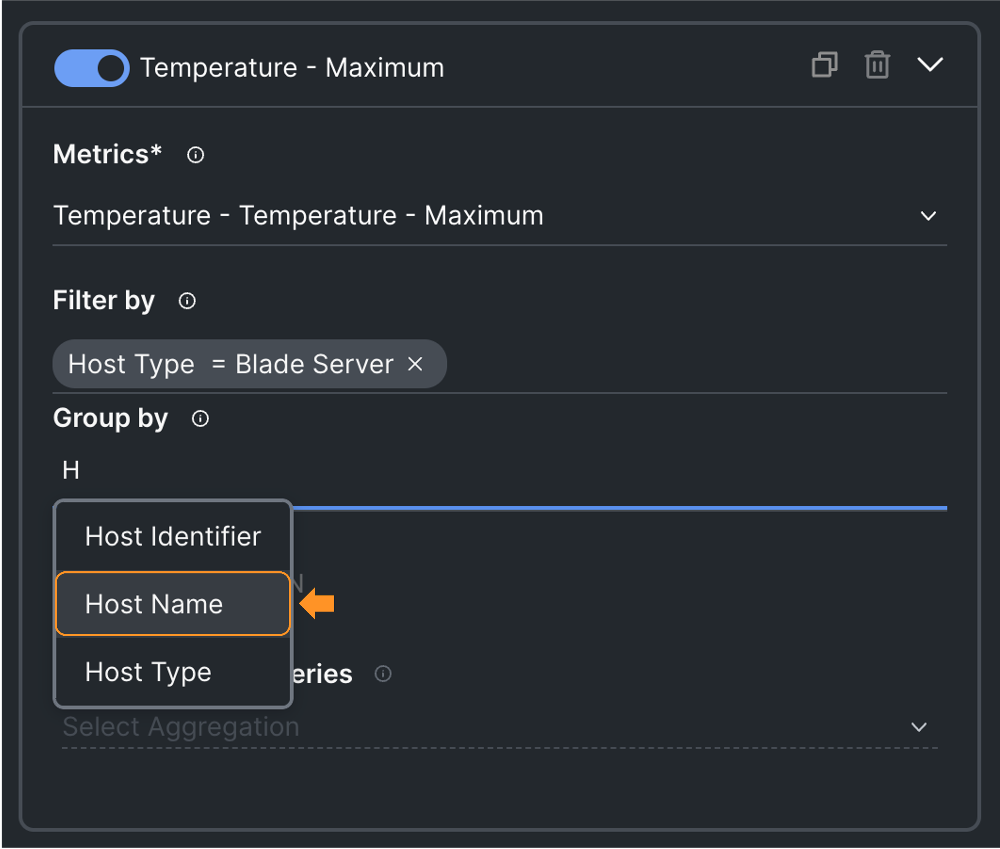
{width="6.075171697287839in" height="5.159222440944882in"}Fig 29: Metrics Grouping
- When you add Group by statements in a large account, you can easily end up with hundreds or even thousands of lines in the graph. This is not a practical solution, which is why Intersight limits graphs to at most 10 lines. If your query contains more data than that, you can use the Top N configuration to limit the amount of data to just the top results. You can select how many results you want to have - at most 10 though.
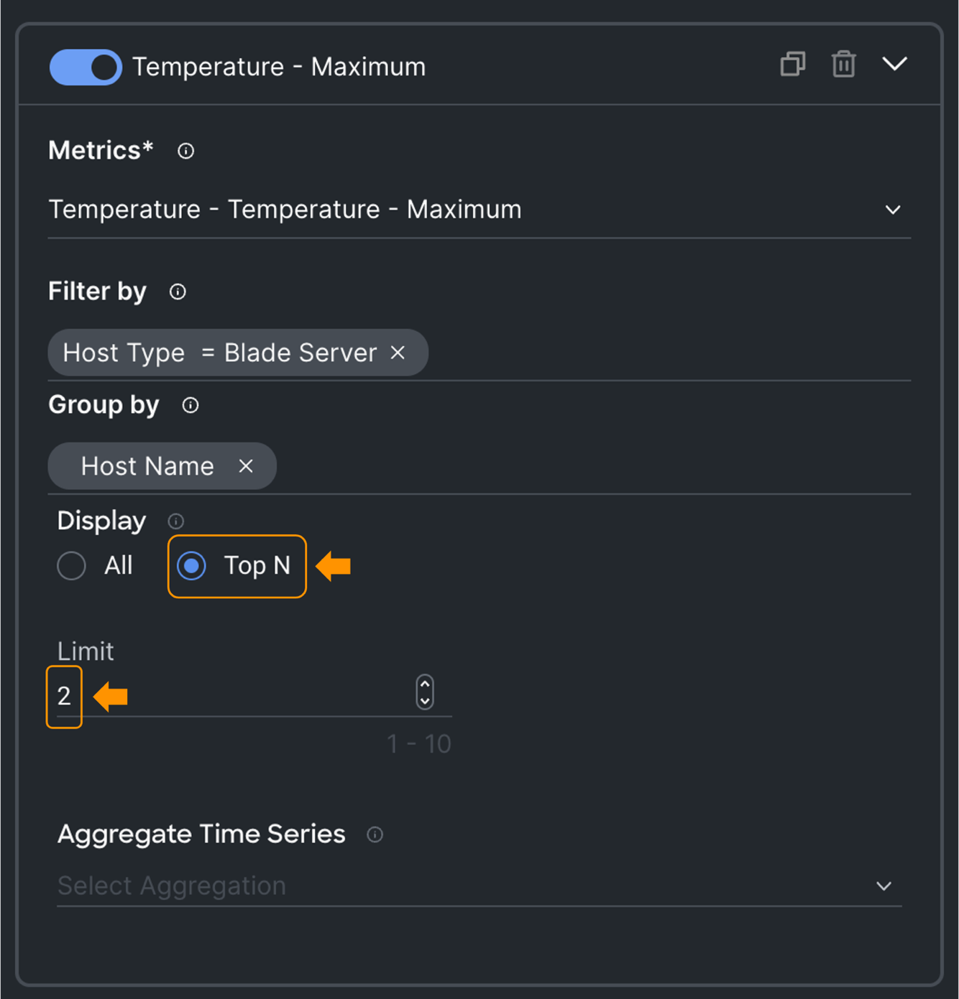
{width="6.042727471566054in" height="6.303029308836395in"}Fig 30: Metrics Top N
-
Finally, you can add an aggregation to your query. This will take all the individual lines you have and combine them back into a single line. This is a rarely needed setting, but it can still be useful to have in certain scenarios.
-
You can add more than one query at a time if you want to plot different things in one graph. You can add a second query by clicking on Add Metrics, or by clicking the clone button on an existing query.
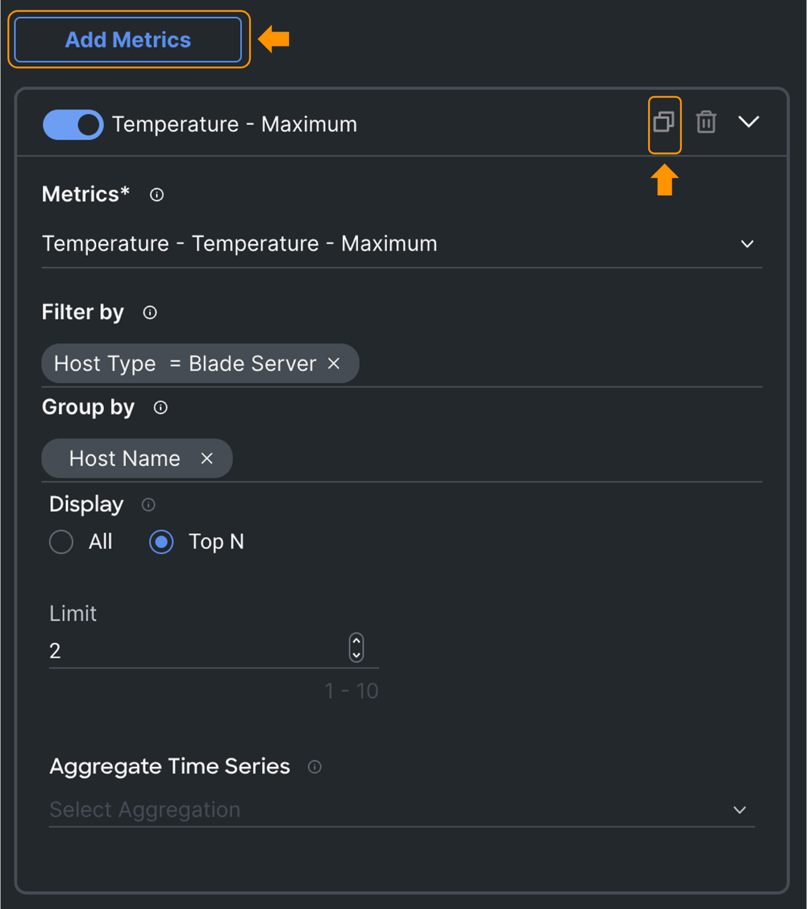
{width="6.062678258967629in" height="6.8181813210848645in"}Fig 31: Adding/Cloning additional metrics
-
Now that the query is done, let\'s have a look at the presentation. You have three main options to modify the chart:
-
Chart Type
-
Time Interval
-
Granularity
-
Let\'s go over them starting with the chart type. This setting determines what type of chart will be used. Most times a traditional line chart will be the best option, but it is always a good idea to play around with the chart types. Depending on the scenario, a different chart type might allow you to visualize your data better.
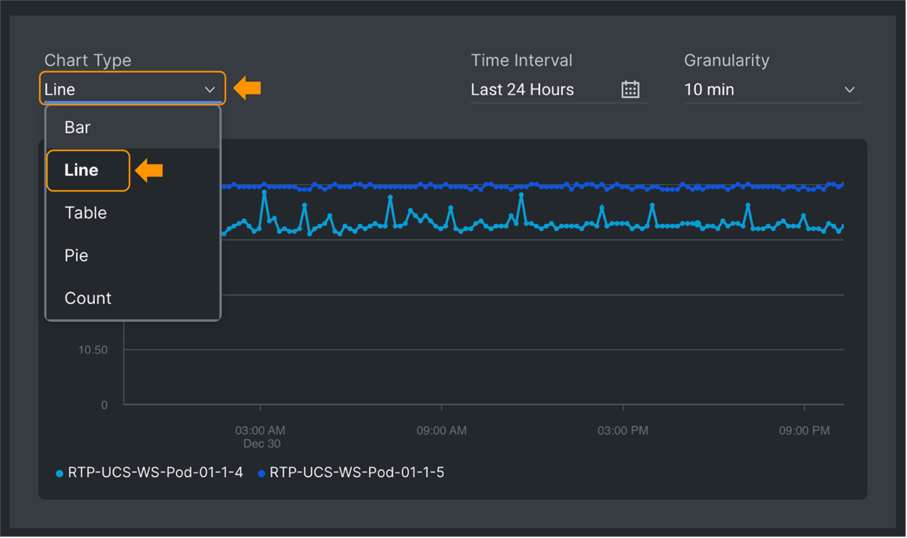
{width="6.070707567804025in" height="3.6050667104111986in"}Fig 32: Metric Chart Types
- The time interval determines what time interval is shown in the chart. You can either select a relative time interval, like Last Week, or you can also use the Custom option, which enables you to set your own absolute time interval with a date picker.
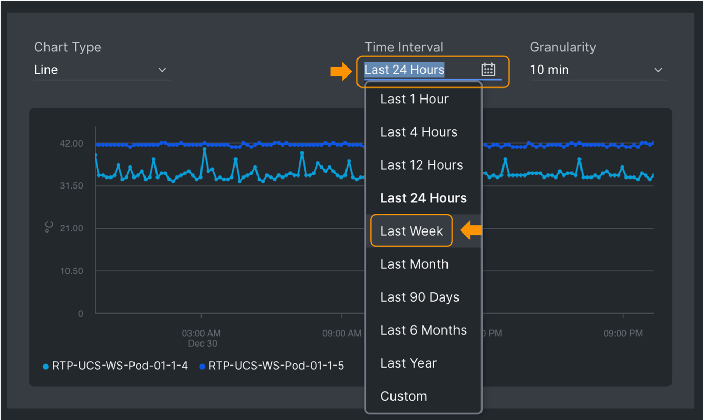
{width="6.090908792650919in" height="3.645174978127734in"}Fig 33: Metrics Time Interval
- Finally, the granularity setting determines how many datapoints will be graphed. You could, for example, graph the last 24 hours with a granularity of 1 hour, which will result in 24 datapoints. You could also use 10 minutes, which will result in 144 (6 for every hour multiplied by 24 hours) datapoints. There is no best answer as to what granularity you should select. Higher is not always better, as too many datapoints will clutter the chart and make it difficult to see anything. Too few datapoints could result in missing details. Play around with these settings to find the sweet spot for your use case.
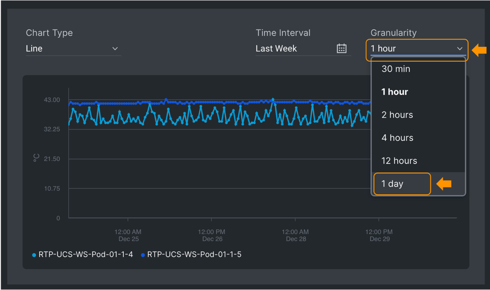
{width="6.060605861767279in" height="3.599067147856518in"}Fig 34: Metrics Granularity
- There are a few more features you can use below the chart area. We will quickly go over them.
{width="6.060416666666667in" height="0.6526607611548556in"}
Fig 35: Metrics Results Area
-
Raw Data: the data that was returned by the query in a table > format - you can also export as CSV from here
-
Display Options: allows you to configure the Y-Axis - useful if you > have more than one type of data
-
Query Code: the API call used to fetch the data; can help you build > your own script
-
Result: query response as JSON
Finally, we should mention that you can save any exploration you do here. One the one hand you can return to these explorations later on, but you can also add them as a widget to your dashboards.
- To save, press the Save button on the top right. Once the exploration is saved, a new button will appear: Add To Dashboard.
Exercise 1
Now that you understand how Intersight and its monitoring features work, we are going to challenge you with a few exercises. For the exercises we are going to give you a challenge that you should complete. You can try by yourself, but you can always compare with our solution below, or just follow along to understand how we would solve this problem.
Challenges
-
Find the blade with the highest energy (kWh) consumption over the last month.
-
Create a chart that shows the power consumption of each ESXi blades per day over the last 2 months.
Solution 1
Let\'s solve the first challenge: finding the blade with the highest energy consumption of the last month. There are actually multiple ways to achieve this. - The simplest option is to just jump to My Dashboard. The Power & Energy Metrics dashboard, which is included out-of-the-box, already contains the relevant widget:
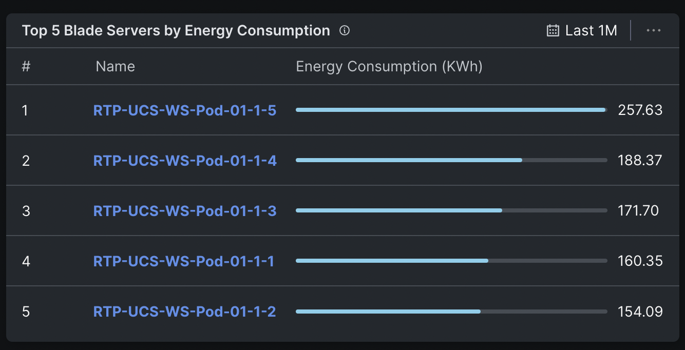
{width="6.040403543307087in" height="3.085252624671916in"}Fig 36: Energy Consumption of Blades
This widget shows us the top 5 blades by energy consumption in kWh - exactly what we were looking for. This was very simple, and it will work if you have a small environment. If you have many blades, and you want to get this information for a specific datacenter, we need to run our own analysis.
For this, let\'s navigate to the Infrastructure Service where we will then open the Explorer. We will now build our own analysis to figure out the same information as we had in the widget above. First, we need to pick the correct metric. There are multiple sources of information for power and energy. We can get that information both per power supply as well as per host. In our case, we are interested in the information per host, which you can find in Host Power and Status. We have two metrics that look relevant here: Host Energy and Host Power, what's the difference?
-
Navigate to Infrastructure Service, where we will then open the Explorer.
-
We will now build our own analysis to figure out the same information as we had in the widget above. First, we need to pick the correct metric. There are multiple sources of information for power and energy. We can get that information both per power supply as well as per host. In our case, we are interested in the information per host, which you can find in Host Power and Status. We have two metrics that look relevant here: Host Energy and Host Power, what's the difference?
-
Host Energy quantifies how much power is consumed over a given period. It is measured in kilowatt-hours (kWh)
-
Host Power is the rate at which energy is consumed, measured in Watts at a specific instant in time.
-
- Finally, we need to select the Statistic, which determines how datapoints are aggregated. In this case we select the only option: Sum. Thus our selection looks like this:
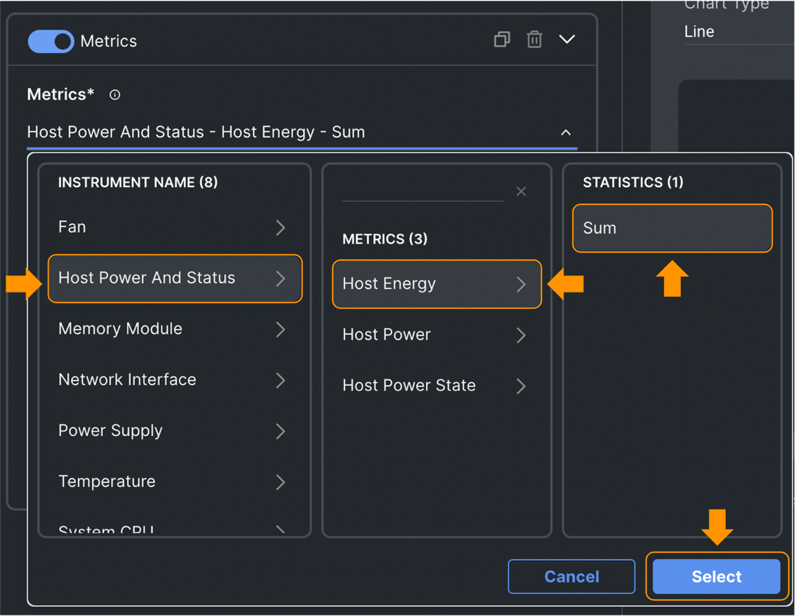
{width="6.060605861767279in" height="4.708624234470691in"}Fig 37: Metric Selection
-
Selecting just the metric results in a single line in the graph representing the sum of all servers. This is nice for an overview, but we really want to have the information for specific servers. To split up the one line into multiple lines for each device, we need to add a Group by. One line will be created for each unique group. In our case, we will create one group for each server.
-
You can click on the line for Group by, which will reveal all possible values. In our case we want to group by something that uniquely identifies the server. There are many options like the Host Identifier, Host Name, Name, or Serial Number. In our case we will simply choose the Name. So far so good, we now have one line per device.
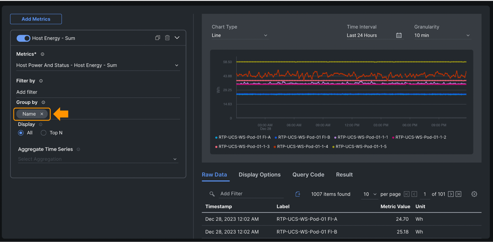
{width="6.070707567804025in" height="2.988655949256343in"}Fig 38: Grouping Metrics
-
If you look at the chart, you will quickly notice that it is also showing Fabric Interconnects. We only want to see blade servers though. To remove the Fabric Interconnects, we need to add a Filter by statement. You can click on the Filter by input to see all possible values. In this case, we can filter on the Host Type. Select that value, then select Equals, which will allow us to perform an exact comparison to a value.
-
We then select Blade Server in the last step. Our chart is now updated and will only show lines for blade servers.
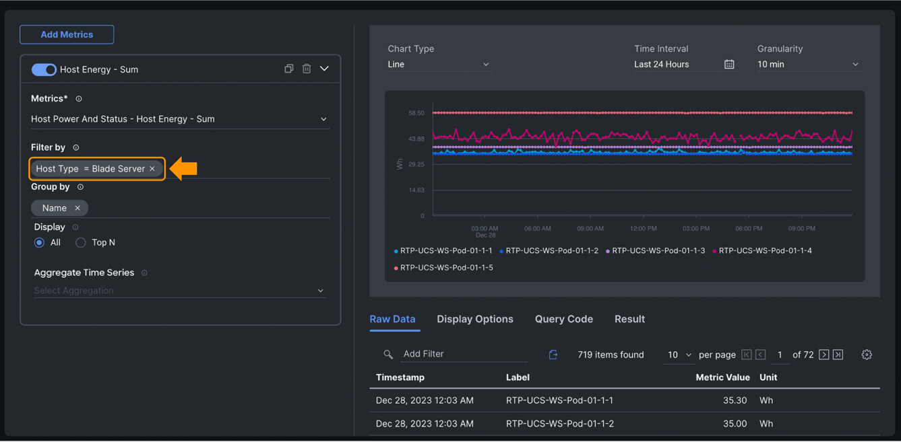
{width="6.070707567804025in" height="2.979316491688539in"}Fig 39: Filter by Blades
-
This account only has a few blades. If we had a larger account, we might want to add a statement that limits the number of lines shown though. To do so, we can select Top N. By default, the limit configured for this setting is 5, thus the chart won\'t change. We can change the Limit to something lower though, for example 2. This means that our chart will only show the Top 2 lines based on power consumption.
-
If we just wanted to find the blade with the highest utilization, Top 1 would be the best choice. With Top 2 we can still easily identify the blade with the highest utilization while also getting some context to see the difference to the blade with the second-highest consumption.
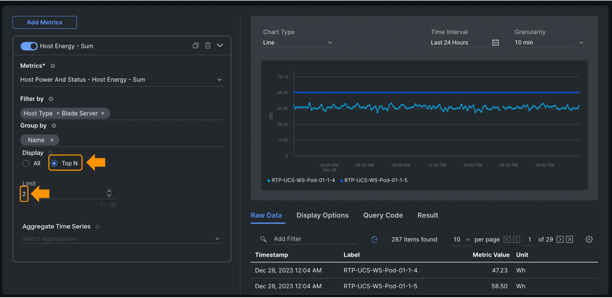
{width="6.070138888888889in" height="2.960359798775153in"}Fig 40: Top N Selection
- One last thing - the question above asked us to determine the consumption per month. The explorer shows a Time Interval of 24 hours by default. We need to adapt the Time Interval to Last Month. Now we are finally done, and we get the following result.
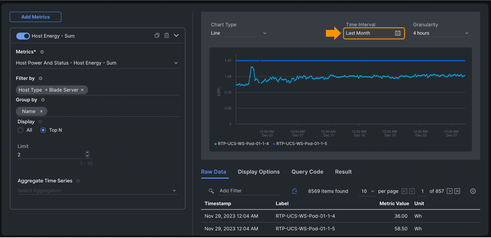
{width="6.080808180227471in" height="2.9562084426946633in"}Fig 41: Final Result
The blade with the highest utilization we can see here should be the same one that also has the highest utilization in the dashboard widget. Please keep in mind that the exact utilization of each blade might be different when you run your session, which would affect this result.
Solution 2
The second question is like the first one, but with a twist. We want to get the total energy consumption of all our ESXi Blades. A lot of what we discussed in the previous question is relevant here as well. - We can start off by creating a chart that shows the Host Energy for all blade servers like we did during the previous question.
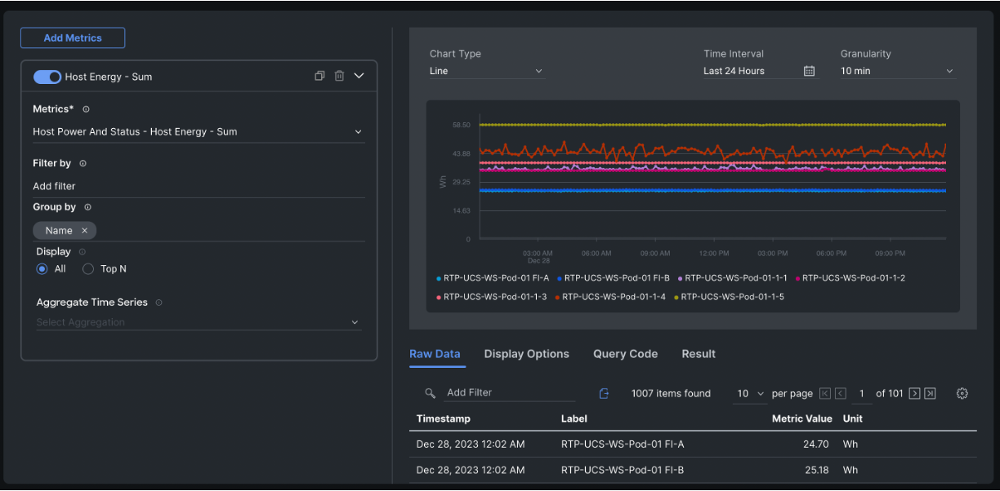
{width="6.020202318460193in" height="2.963791557305337in"}Fig 42: Host Energy for Blade Servers
-
Let\'s start by addressing what\'s missing. We can get the ESXi servers in two ways. The simple way would be switching to the \"Virtualization\" menu and then moving to the Hosts tab. Here you can see all ESXi hosts registered in vCenters that are connected to Intersight. If a host is not connected to vCenter or if the vCenter is not connected to Intersight, it will now show up in here.
-
With this list, we just need to figure out which physical server corresponds to which ESXi host. To do so, we are going to modify the table by clicking on the wheel icon and selecting Edit.
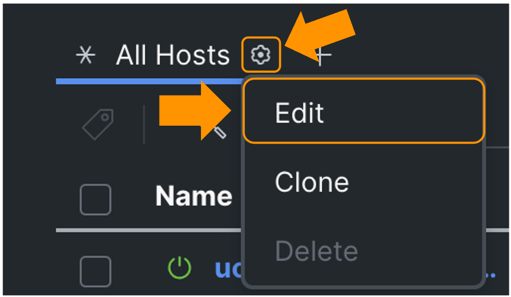
{width="6.080808180227471in" height="3.53622375328084in"}Fig 43: Modify Host Table
- This will open a menu where you can modify what columns will be shown in the table. We are going to add Server, but we might also want to remove some of the unnecessary columns to avoid overcrowding the table.
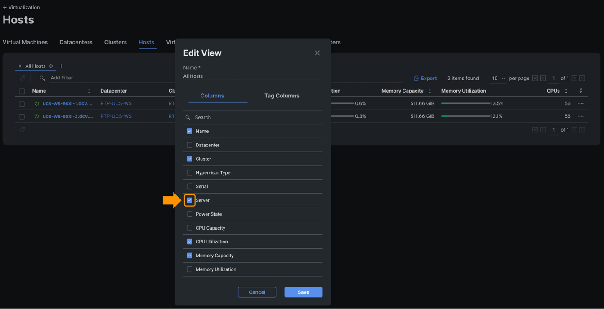
{width="6.080555555555556in" height="3.124469597550306in"}Fig 44: Add Server Name to Hosts Table
- We will finally have a table that looks something like this.
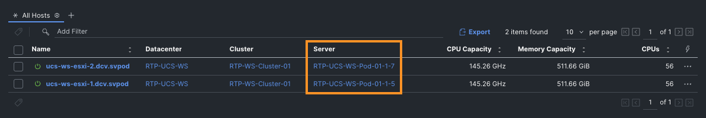
{width="6.020202318460193in" height="1.0117279090113735in"}Fig 45: Host Table with Server Names
-
We can clearly see that the blades used for ESXi are RTP-UCS-WS-Pod-01-1-7 and RTP-UCS-WS-Pod-01-1-5.
-
Before we continue with the exercise, let\'s briefly touch upon the second way to find out if a server is running ESXi. You can use the HCL feature we highlighted before. When you navigate to the HCL view of a server, you can see the installed operating system. This is quite a tedious process, as you would have to do this for each server individually. Please keep in mind that there are certain prerequisites for operating system to be visible here, depending on what operating system you have: [VMware]{.underline} & [other operating systems]{.underline}.
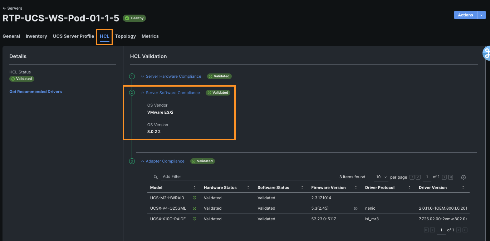
{width="6.080808180227471in" height="3.0007753718285213in"}Fig 46: OS details in the HCL tab for a server
- Now that we know what servers are running ESXi, we can modify our query by adding a filter for the Name of the server starting with RTP-UCS-WS-Pod-01-1-1.
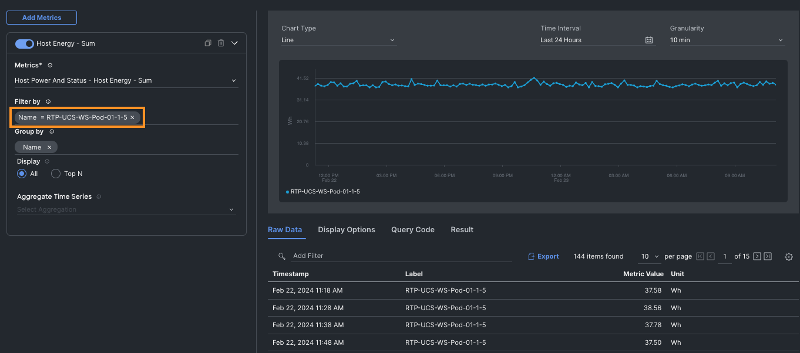
{width="6.029861111111111in" height="2.6651213910761156in"}Fig 47: Filter by Server Name
- We can then simply duplicate the query by clicking on the duplicate icon. In the second query, we change the filter to RTP-UCS-WS-Pod-01-1-7. This gives us a chart that just shows our two ESXi servers.
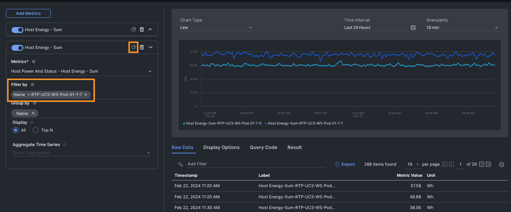
{width="6.030302930883639in" height="2.513915135608049in"}Fig 48: Adding Second ESXi Host Filter
- Finally, we are going to modify the time interval to the last two months. In the dropdown, we only have Last Month or Last 90 Days, thus we are going to have to build this ourselves. Simply click on Custom, and then select the Start and End dates in the calendar.
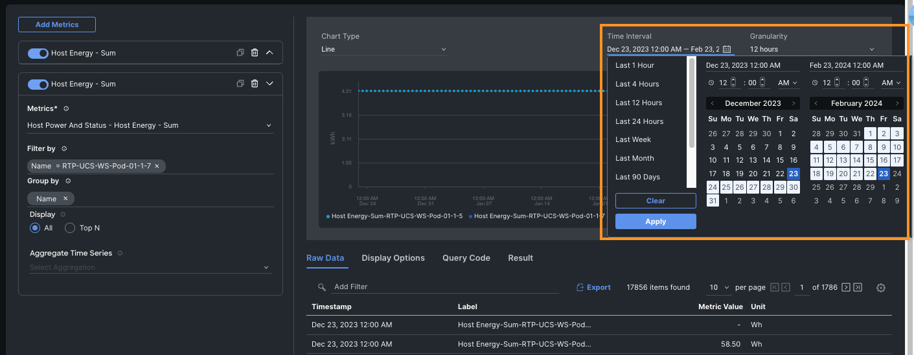
{width="6.05in" height="2.3598873578302713in"}Fig 49: Customize Time Interval
- The request was to show the consumption per day; thus we need to modify the Granularity to be 1 day.
{width="6.05in" height="2.9784612860892388in"}
Fig 50: Granularity customization
Congrats! You just completed the first exercise! Let\'s move on to a second one.
Exercise 2
For these exercises we are going to give you a challenge that you should complete. You can try by yourself, but you can always compare with our solution below.
Challenges
-
What is the bandwidth of the network interfaces on server 1?
-
Are there any network errors on any of the interfaces of server 2? Add a custom widget to the dashboard to monitor this.
Solution 1
Let\'s try to understand the bandwidth of our first blade. We will have to find the correct metrics for the job.
-
In Infrastructure Services, open the Explorer view. Select the Network Interface metrics.
-
There are a lot of metrics available. In our case, we can simply shorten the list by adding bytes in the search. We are then looking for a metric called Network RX Bytes. This tracks the bytes that were received on an interface. The same metric also exists for transmit as Network TX Bytes. There is also a metric that combines both: Network Bytes. We want the individual values though, as the combined metric could be deceiving. Finally, for the Statistic we always want to make sure that we get the Maximum utilization. If multiple values are aggregated, we won\'t miss peaks, which could happen if we chose Average.
{width="6.060605861767279in" height="2.9743591426071743in"}
Fig 51: Network Bytes Selection
- Like in the previous exercise, there is one line that summarizes our entire environment. We only want to get the information for a single blade; thus, we can filter down to that. One blade can have multiple network interfaces, thus we can\'t use the Name as a filter this time, as the Name will represent the name of the network interface. Instead, we can use Host Name, which contains the name of the blade.
{width="6.060416666666667in" height="2.4649584426946634in"}
Fig 52: Filter by Host Name
- The single line now represents an aggregation of all network interfaces on the server based on the maximum value. We would like to see individual interfaces though; thus, we will need to split up our aggregated line into one line per interface. If we are not sure what attribute we should choose, where would we go to find that information? There is a comprehensive documentation for all metrics that are supported in Intersight, grouped by the instrument. In this case we are looking at network interfaces (instrument), thus the relevant documentation can be found here. Looking through the list of attributes, there is actually a very simple answer. We are now looking at network interfaces (instrument), thus the Name will now represent the name of the network interface, and we can use that as a filter.
{width="6.060605861767279in" height="2.6463353018372704in"}
Fig 53: Group by Name
- So far, we have only looked at the RX side. We can clone our query, and then modify the metrics selection in the second query to include the Network TX Bytes. This results in our final graph.
{width="6.5in" height="2.720833333333333in"}
Fig 54: Query for Network TX Bytes
Here we can see all network interfaces, both in the RX and TX direction.
Solution 2
This exercise is like the previous one in a lot of ways. We are looking at metrics for network interfaces. As we will soon see, those metrics for network errors are also split up into RX and TX. Thus, we can run a similar analysis to what we did above.
The two differences: we will select different metrics, and we will filter for a different blade.
So, what metrics do we need? - When you navigate to see all the Network Interface metrics, you will see that there is one metric for each error type. While this is useful when analysing details, we just want to have an overall idea of error counts on the server interfaces. There is one metric that shows the total error counts for each direction.
-
In Explorer add the following:
a. Network Interface > Total Network RX Errors > Maximum (Rate)
{width="6.050505249343832in" height="2.97871062992126in"}
Fig 55: Choosing Total Network RX Errors
-
Now, let\'s add the Filter by and Group by conditions like the last example.
a. Filter by: Host Name = RTP-UCS-WS-Pod-01-1-7
b. Group by: Name
{width="6.070138888888889in" height="3.404076990376203in"}
Fig 56: Adding [Filter by]{.underline} and [Group by]{.underline} selections
- We can then duplicate this query and change the second metric to TX to graph both directions.
{width="6.070138888888889in" height="2.9293613298337706in"}
Fig 57: Add Total Network TX Errors
-
All done. In this case there are no errors on any of the interfaces. We are done with the exploration, but we now need to add the widget to a dashboard. To do so, we first need to save this exploration. by clicking on the Save button on the top right, setting the Organization to store the dashboard, and giving it a unique name.
a. Organization: DCP-X-Sandbox
b. Name: my_exploration
{width="6.5in" height="2.76875in"}
Fig 58: Save customer explorer to Dashboard
- We could have added the widget to the dashboard right from this menu, but we are instead going to click on Add To Dashboard from the menu above. We select a dashboard we like, and then just add it.
{width="6.070707567804025in" height="3.4836515748031496in"}
Fig 59: Add to Dashboard
If you now switch to that dashboard, the graph from our exploration will be there. That\'s all for our exercises. We hope you enjoyed them and learned something along the way!
What's Next?
We hope that you had fun learning about monitoring your environment with Intersight in this lab! If you want to learn more about Monitoring, there are a few resources that can help you: